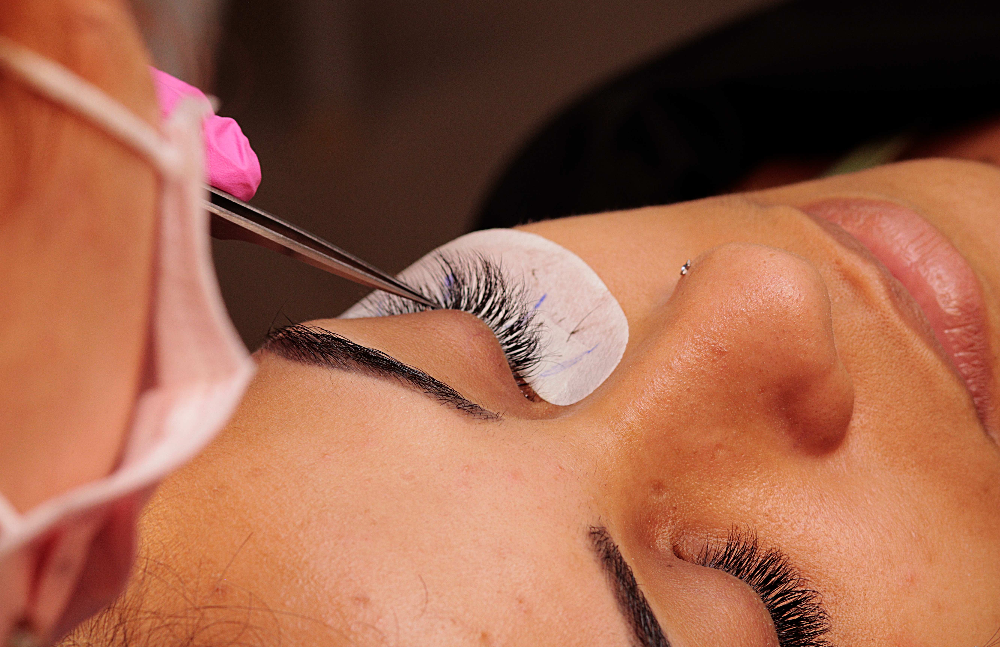
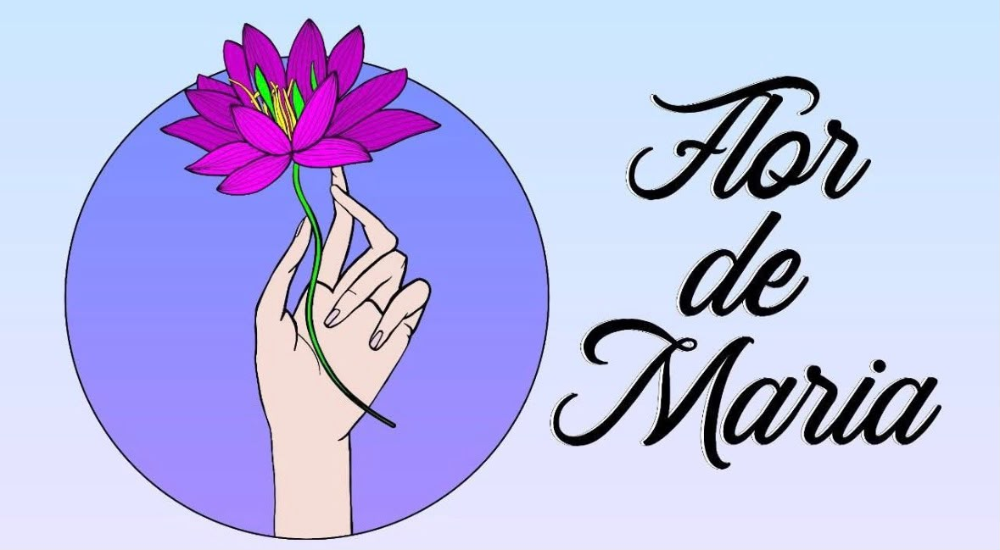
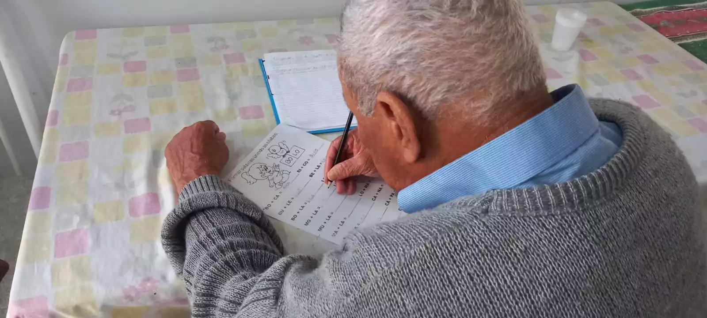
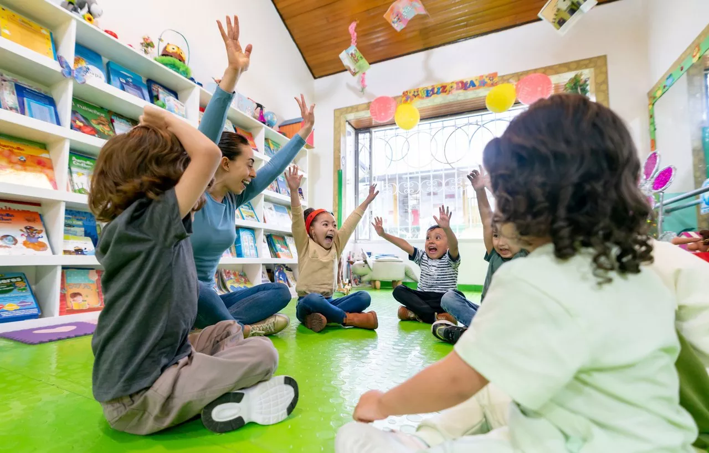

Curso de cilios
Cursos de capacitação profissional com duração aproximada de um mês, oferecendo oportunidades de aprendizado e desenvolvimento.
Saiba maisTransformando vidas através da educação, solidariedade e acolhimento.
Conheça nossos projetos
A Associação Flor de Maria é uma instituição dedicada ao acolhimento, à educação e ao desenvolvimento social da comunidade.
Por meio de cursos profissionalizantes, projetos educacionais e ações solidárias, a associação busca proporcionar novas oportunidades e contribuir para a melhoria da qualidade de vida das pessoas atendidas.
Conheça nossas iniciativas de capacitação profissional e desenvolvimento educacional.

Cursos de capacitação profissional com duração aproximada de um mês, oferecendo oportunidades de aprendizado e desenvolvimento.
Saiba mais
Iniciativa prevista em parceria com a Educação de Jovens e Adultos (EJA), com foco na alfabetização e inclusão educacional.
Saiba mais
Projeto que oferece acolhimento e acompanhamento às crianças, auxiliando na realização das atividades escolares.
Saiba maisConheça as iniciativas que promovem solidariedade e apoio à comunidade.

O projeto Peixe na Mesa realiza ações de distribuição de peixes, contribuindo para o apoio alimentar de famílias da comunidade.
A associação promove ações de doação de roupas, incentivando a solidariedade e oferecendo apoio às pessoas da comunidade.
Sua contribuição pode transformar vidas! Conheça as formas de apoiar a Associação Flor de Maria e fazer a diferença na nossa comunidade.
Contribua com roupas, alimentos e outros materiais que possam ajudar famílias da comunidade.
Quero DoarCompartilhe seu tempo e suas habilidades para apoiar as atividades e projetos sociais da associação.
Quero Ser VoluntárioTem alguma dúvida ou deseja conhecer melhor nossos projetos? Entre em contato conosco!
📍 Rua Padre Ferreiro da Rocha, 122
Vila Yolanda II - São Paulo/SP
CEP: 08473-510
📱 Entre em contato pelo nosso WhatsApp.
Falar pelo WhatsApp